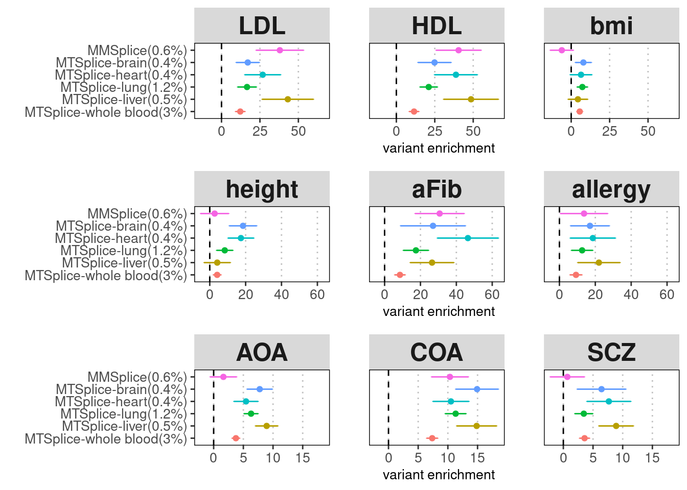
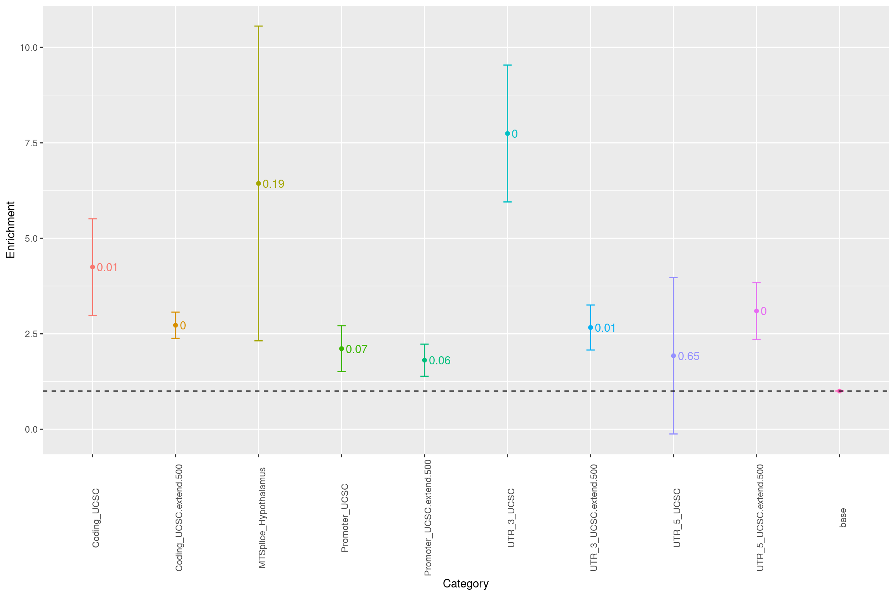

Predicting splicing effects with MTSplice
Last updated: 2022-08-02
Checks: 6 1
Knit directory: funcFinemapping/
This reproducible R Markdown analysis was created with workflowr (version 1.6.2). The Checks tab describes the reproducibility checks that were applied when the results were created. The Past versions tab lists the development history.
The R Markdown is untracked by Git. To know which version of the R Markdown file created these results, you'll want to first commit it to the Git repo. If you're still working on the analysis, you can ignore this warning. When you're finished, you can run wflow_publish to commit the R Markdown file and build the HTML.
Great job! The global environment was empty. Objects defined in the global environment can affect the analysis in your R Markdown file in unknown ways. For reproduciblity it's best to always run the code in an empty environment.
The command set.seed(20210404) was run prior to running the code in the R Markdown file. Setting a seed ensures that any results that rely on randomness, e.g. subsampling or permutations, are reproducible.
Great job! Recording the operating system, R version, and package versions is critical for reproducibility.
Nice! There were no cached chunks for this analysis, so you can be confident that you successfully produced the results during this run.
Great job! Using relative paths to the files within your workflowr project makes it easier to run your code on other machines.
Great! You are using Git for version control. Tracking code development and connecting the code version to the results is critical for reproducibility.
The results in this page were generated with repository version 8e55d5a. See the Past versions tab to see a history of the changes made to the R Markdown and HTML files.
Note that you need to be careful to ensure that all relevant files for the analysis have been committed to Git prior to generating the results (you can use wflow_publish or wflow_git_commit). workflowr only checks the R Markdown file, but you know if there are other scripts or data files that it depends on. Below is the status of the Git repository when the results were generated:
Ignored files:
Ignored: .ipynb_checkpoints/
Ignored: analysis/PTR_m6A.nb.html
Ignored: analysis/build_annotations_for_single_cell_data.nb.html
Ignored: analysis/lab4_prepare.nb.html
Ignored: analysis/ldsc_results.nb.html
Ignored: analysis/learn_archR.nb.html
Ignored: analysis/mtsplice_finemapping_results.nb.html
Ignored: analysis/results.nb.html
Ignored: analysis/snp_finemapping_results.nb.html
Ignored: analysis/splicing.nb.html
Ignored: analysis/susie_tutorial.nb.html
Untracked files:
Untracked: SNPs_categories,png
Untracked: SNPs_categories.png
Untracked: analysis/.ipynb_checkpoints/
Untracked: analysis/PTR_m6A.Rmd
Untracked: analysis/PTR_splicing_mtsplice.Rmd
Untracked: analysis/PTR_splicing_spliceAI.Rmd
Untracked: bmi_locus1410.pdf
Untracked: code/.ipynb_checkpoints/
Untracked: code/.snakemake/
Untracked: code/Euro_LD_Chunks.RData
Untracked: code/Snakefile
Untracked: code/config.yaml
Untracked: code/environment.yml
Untracked: code/ldsc.log
Untracked: code/ldsc.results
Untracked: code/ldsc_regression.sh
Untracked: code/make_plots.R
Untracked: code/out/
Untracked: code/run_ldsc.sh
Untracked: code/run_ldsc_with_bed.sh
Untracked: code/run_ldsc_with_bed_v2.sh
Untracked: code/run_susie.R
Untracked: code/run_torus.sh
Untracked: code/sctype/
Untracked: code/slurm-21650345.out
Untracked: code/slurm-21650346.out
Untracked: code/slurm-21650360.out
Untracked: code/slurm-21650362.out
Untracked: code/slurm-21650363.out
Untracked: code/slurm-21650364.out
Untracked: code/slurm-21650392.out
Untracked: code/slurm-21650400.out
Untracked: code/slurm-21650401.out
Untracked: code/slurm-21650402.out
Untracked: code/slurm-21794041.out
Untracked: code/slurm-21794379.out
Untracked: code/slurm-21794398.out
Untracked: code/slurm-21795536.out
Untracked: code/slurm-21795537.out
Untracked: code/slurm-21795538.out
Untracked: code/slurm-21795539.out
Untracked: code/slurm-21795541.out
Untracked: code/slurm-21795543.out
Untracked: code/slurm-21795562.out
Untracked: code/slurm-21795563.out
Untracked: code/slurm-21795564.out
Untracked: code/slurm-21795593.out
Untracked: code/slurm-21795594.out
Untracked: code/slurm-21795595.out
Untracked: code/slurm-21795597.out
Untracked: code/slurm-21795598.out
Untracked: code/slurm-21795599.out
Untracked: code/slurm-21795602.out
Untracked: code/slurm-21795603.out
Untracked: code/slurm-21795604.out
Untracked: code/slurm-21795607.out
Untracked: code/slurm-21795609.out
Untracked: code/slurm-21795610.out
Untracked: code/slurm-21795616.out
Untracked: code/slurm-21795619.out
Untracked: code/slurm-21795620.out
Untracked: code/slurm-21795625.out
Untracked: code/slurm-21795644.out
Untracked: code/slurm-21795645.out
Untracked: code/slurm-21795647.out
Untracked: code/slurm-21795649.out
Untracked: code/slurm-21795650.out
Untracked: code/slurm-21795651.out
Untracked: code/slurm-21795653.out
Untracked: code/slurm-21795654.out
Untracked: code/slurm-21795657.out
Untracked: code/slurm-21795663.out
Untracked: code/slurm-21795664.out
Untracked: code/slurm-21795666.out
Untracked: code/slurm-21795668.out
Untracked: code/slurm-21795669.out
Untracked: code/slurm-21795678.out
Untracked: code/slurm-21795681.out
Untracked: code/slurm-21795682.out
Untracked: code/slurm-21795683.out
Untracked: code/slurm-21795697.out
Untracked: code/slurm-21795698.out
Untracked: code/slurm-21795707.out
Untracked: code/slurm-21795708.out
Untracked: code/slurm-21795709.out
Untracked: code/slurm-21795711.out
Untracked: code/slurm-21795712.out
Untracked: code/slurm-21795713.out
Untracked: code/slurm-21795714.out
Untracked: code/slurm-21796255.out
Untracked: code/slurm-21796256.out
Untracked: code/slurm-21796257.out
Untracked: code/slurm-21796314.out
Untracked: code/slurm-21796315.out
Untracked: code/slurm-21796316.out
Untracked: code/slurm-21796328.out
Untracked: code/slurm-21796329.out
Untracked: code/slurm-21796330.out
Untracked: code/slurm-21796371.out
Untracked: code/slurm-21796372.out
Untracked: code/slurm-21796373.out
Untracked: code/slurm-21796377.out
Untracked: code/slurm-21796378.out
Untracked: code/slurm-21796379.out
Untracked: code/slurm-21796390.out
Untracked: code/slurm-21796391.out
Untracked: code/slurm-21796392.out
Untracked: code/slurm-21796398.out
Untracked: code/slurm-21796399.out
Untracked: code/slurm-21796400.out
Untracked: code/slurm-21796412.out
Untracked: code/slurm-21796413.out
Untracked: code/slurm-21796414.out
Untracked: code/slurm-21796417.out
Untracked: code/slurm-21796418.out
Untracked: code/slurm-21796419.out
Untracked: code/slurm-21796426.out
Untracked: code/slurm-21796427.out
Untracked: code/slurm-21796428.out
Untracked: code/slurm-21796434.out
Untracked: code/slurm-21796435.out
Untracked: code/slurm-21796436.out
Untracked: code/slurm-21796445.out
Untracked: code/slurm-21796446.out
Untracked: code/slurm-21796447.out
Untracked: code/slurm-21796456.out
Untracked: code/slurm-21796457.out
Untracked: code/slurm-21796458.out
Untracked: code/slurm-21796466.out
Untracked: code/slurm-21796467.out
Untracked: code/slurm-21796468.out
Untracked: code/slurm-21796476.out
Untracked: code/slurm-21796477.out
Untracked: code/slurm-21796478.out
Untracked: code/slurm-21796521.out
Untracked: code/slurm-21796598.out
Untracked: code/slurm-21796599.out
Untracked: code/slurm-21796600.out
Untracked: code/slurm-21796609.out
Untracked: code/slurm-21796610.out
Untracked: code/slurm-21796613.out
Untracked: code/slurm-21796645.out
Untracked: code/slurm-21796646.out
Untracked: code/slurm-21796710.out
Untracked: code/slurm-21796741.out
Untracked: code/slurm-21796744.out
Untracked: code/slurm-21796762.out
Untracked: code/slurm-21796763.out
Untracked: code/slurm-21796781.out
Untracked: code/slurm-21796819.out
Untracked: code/slurm-21796860.out
Untracked: code/slurm-21796884.out
Untracked: code/slurm-21796921.out
Untracked: code/slurm-21796926.out
Untracked: code/slurm-21796930.out
Untracked: code/slurm-21796966.out
Untracked: code/slurm-21796994.out
Untracked: code/slurm-21797176.out
Untracked: code/slurm-21797177.out
Untracked: code/slurm-21797178.out
Untracked: code/slurm-21797246.out
Untracked: code/slurm-21797247.out
Untracked: code/slurm-21797322.out
Untracked: code/slurm-21797494.out
Untracked: code/slurm-21797495.out
Untracked: code/slurm-21797496.out
Untracked: code/slurm-21797499.out
Untracked: code/slurm-21797500.out
Untracked: code/slurm-21797501.out
Untracked: code/slurm-21797532.out
Untracked: code/slurm-21797533.out
Untracked: code/slurm-21797534.out
Untracked: code/slurm-21838090.out
Untracked: code/slurm-21838091.out
Untracked: code/slurm-21838092.out
Untracked: code/slurm-21838190.out
Untracked: code/slurm-21838191.out
Untracked: code/slurm-21838192.out
Untracked: code/slurm-21838269.out
Untracked: code/slurm-21838270.out
Untracked: code/slurm-21838271.out
Untracked: code/slurm-21838277.out
Untracked: code/slurm-21838278.out
Untracked: code/slurm-21838279.out
Untracked: code/slurm-21838285.out
Untracked: code/slurm-21838286.out
Untracked: code/slurm-21838287.out
Untracked: code/slurm-21838293.out
Untracked: code/slurm-21838294.out
Untracked: code/slurm-21838295.out
Untracked: code/slurm-21838301.out
Untracked: code/slurm-21838302.out
Untracked: code/slurm-21838303.out
Untracked: code/slurm-21838310.out
Untracked: code/slurm-21838311.out
Untracked: code/slurm-21838312.out
Untracked: code/slurm-21838335.out
Untracked: code/slurm-21838338.out
Untracked: code/slurm-21838342.out
Untracked: code/slurm-21838345.out
Untracked: code/slurm-21838357.out
Untracked: code/slurm-21838359.out
Untracked: code/slurm-21838361.out
Untracked: code/slurm-21838364.out
Untracked: code/slurm-21838366.out
Untracked: code/slurm-21838367.out
Untracked: code/slurm-21838368.out
Untracked: code/slurm-21838369.out
Untracked: code/slurm-21838370.out
Untracked: code/slurm-21838373.out
Untracked: code/slurm-21838374.out
Untracked: code/slurm-21838375.out
Untracked: code/slurm-21838381.out
Untracked: code/slurm-21838382.out
Untracked: code/slurm-21838383.out
Untracked: code/slurm-21838393.out
Untracked: code/slurm-21838394.out
Untracked: code/slurm-21838395.out
Untracked: code/slurm-21838399.out
Untracked: code/slurm-21838400.out
Untracked: code/slurm-21838401.out
Untracked: code/slurm-21838408.out
Untracked: code/slurm-21838409.out
Untracked: code/slurm-21838410.out
Untracked: code/slurm-21838411.out
Untracked: code/slurm-21838412.out
Untracked: code/slurm-21838413.out
Untracked: code/slurm-21838419.out
Untracked: code/slurm-21838420.out
Untracked: code/slurm-21838421.out
Untracked: code/slurm-21838436.out
Untracked: code/slurm-21838437.out
Untracked: code/slurm-21838438.out
Untracked: code/slurm-21838442.out
Untracked: code/slurm-21838465.out
Untracked: code/slurm-21838466.out
Untracked: code/slurm-21838480.out
Untracked: code/slurm-21838487.out
Untracked: code/slurm-21838519.out
Untracked: code/slurm-21838540.out
Untracked: code/slurm-21838542.out
Untracked: code/slurm-21838546.out
Untracked: code/slurm-21838547.out
Untracked: code/slurm-21838549.out
Untracked: code/slurm-21838550.out
Untracked: code/slurm-21838551.out
Untracked: code/slurm-21838552.out
Untracked: code/slurm-21838553.out
Untracked: code/slurm-21838558.out
Untracked: code/slurm-21838559.out
Untracked: code/slurm-21838560.out
Untracked: code/slurm-21838561.out
Untracked: code/slurm-21838562.out
Untracked: code/slurm-21838563.out
Untracked: code/slurm-21838565.out
Untracked: code/slurm-21838566.out
Untracked: code/slurm-21838567.out
Untracked: code/slurm-21838568.out
Untracked: code/slurm-21838569.out
Untracked: code/slurm-21838570.out
Untracked: code/slurm-21838591.out
Untracked: code/slurm-21838593.out
Untracked: code/slurm-21838595.out
Untracked: code/slurm-21838652.out
Untracked: code/slurm-21838653.out
Untracked: code/slurm-21838654.out
Untracked: code/slurm-21838655.out
Untracked: code/slurm-21838656.out
Untracked: code/slurm-21838664.out
Untracked: code/slurm-21838666.out
Untracked: code/slurm-21838667.out
Untracked: code/slurm-21838704.out
Untracked: code/slurm-21838711.out
Untracked: code/slurm-21838712.out
Untracked: code/slurm-21838713.out
Untracked: code/slurm-21838714.out
Untracked: code/slurm-21838721.out
Untracked: code/slurm-21838728.out
Untracked: code/slurm-21838729.out
Untracked: code/slurm-21838735.out
Untracked: code/slurm-21838818.out
Untracked: code/slurm-21838819.out
Untracked: code/slurm-21838823.out
Untracked: code/slurm-21838828.out
Untracked: code/slurm-21838830.out
Untracked: code/slurm-21838833.out
Untracked: code/slurm-21838834.out
Untracked: code/slurm-21838836.out
Untracked: code/slurm-21838837.out
Untracked: code/slurm-21838840.out
Untracked: code/slurm-21838843.out
Untracked: code/slurm-21838844.out
Untracked: code/slurm-21838846.out
Untracked: code/slurm-21838848.out
Untracked: code/slurm-21838851.out
Untracked: code/slurm-21838855.out
Untracked: code/slurm-21838857.out
Untracked: code/slurm-21838858.out
Untracked: code/slurm-21838859.out
Untracked: code/slurm-21838862.out
Untracked: code/slurm-21838865.out
Untracked: code/slurm-21838867.out
Untracked: code/slurm-21838868.out
Untracked: code/slurm-21838870.out
Untracked: code/slurm-21838871.out
Untracked: code/slurm-21838873.out
Untracked: code/slurm-21838874.out
Untracked: code/slurm-21838879.out
Untracked: code/slurm-21838880.out
Untracked: code/slurm-21839729.out
Untracked: code/slurm-21839730.out
Untracked: code/slurm-21839731.out
Untracked: code/slurm-21839732.out
Untracked: code/slurm-21839733.out
Untracked: code/slurm-21839735.out
Untracked: code/slurm-21839736.out
Untracked: code/slurm-21839737.out
Untracked: code/slurm-21839738.out
Untracked: code/slurm-21839739.out
Untracked: code/slurm-21839967.out
Untracked: code/slurm-21839968.out
Untracked: code/slurm-21839969.out
Untracked: code/slurm-21839970.out
Untracked: code/slurm-21839971.out
Untracked: code/slurm-21839979.out
Untracked: code/slurm-21839980.out
Untracked: code/slurm-21839981.out
Untracked: code/slurm-21839982.out
Untracked: code/slurm-21839983.out
Untracked: code/slurm-21839986.out
Untracked: code/slurm-21839987.out
Untracked: code/slurm-21839988.out
Untracked: code/slurm-21839989.out
Untracked: code/slurm-21839990.out
Untracked: code/slurm-21839991.out
Untracked: code/slurm-21839992.out
Untracked: code/slurm-21840080.out
Untracked: code/slurm-21840081.out
Untracked: code/slurm-21840082.out
Untracked: code/slurm-21840083.out
Untracked: code/slurm-21840084.out
Untracked: code/slurm-21840110.out
Untracked: code/slurm-21840111.out
Untracked: code/slurm-21840112.out
Untracked: code/slurm-21840113.out
Untracked: code/slurm-21840114.out
Untracked: code/slurm-21840117.out
Untracked: code/slurm-21840118.out
Untracked: code/slurm-21840119.out
Untracked: code/slurm-21840120.out
Untracked: code/slurm-21840121.out
Untracked: code/slurm-21840126.out
Untracked: code/slurm-21840127.out
Untracked: code/slurm-21840128.out
Untracked: code/slurm-21840129.out
Untracked: code/slurm-21840130.out
Untracked: code/slurm-21840133.out
Untracked: code/slurm-21840134.out
Untracked: code/slurm-21840135.out
Untracked: code/slurm-21840136.out
Untracked: code/slurm-21840137.out
Untracked: code/slurm-21840139.out
Untracked: code/slurm-21840140.out
Untracked: code/slurm-21840155.out
Untracked: code/slurm-21840156.out
Untracked: code/slurm-21840157.out
Untracked: code/slurm-21840158.out
Untracked: code/slurm-21840159.out
Untracked: code/slurm-21840177.out
Untracked: code/slurm-21840178.out
Untracked: code/slurm-21840181.out
Untracked: code/slurm-21840186.out
Untracked: code/slurm-21840187.out
Untracked: code/slurm-21840189.out
Untracked: code/slurm-21840192.out
Untracked: code/slurm-21840195.out
Untracked: code/slurm-21840196.out
Untracked: code/slurm-21840198.out
Untracked: code/slurm-21840200.out
Untracked: code/slurm-21840203.out
Untracked: code/slurm-21840308.out
Untracked: code/slurm-21840321.out
Untracked: code/slurm-21840331.out
Untracked: code/slurm-21840333.out
Untracked: code/slurm-21840339.out
Untracked: code/slurm-21840343.out
Untracked: code/slurm-21840346.out
Untracked: code/slurm-21840347.out
Untracked: code/slurm-21840351.out
Untracked: code/slurm-21840355.out
Untracked: code/slurm-21840357.out
Untracked: code/slurm-21840358.out
Untracked: code/slurm-21840359.out
Untracked: code/slurm-21840366.out
Untracked: code/slurm-21840368.out
Untracked: code/slurm-21840369.out
Untracked: code/slurm-21840370.out
Untracked: code/slurm-21840371.out
Untracked: code/slurm-21840372.out
Untracked: code/slurm-21840376.out
Untracked: code/slurm-21840378.out
Untracked: code/slurm-21840381.out
Untracked: code/slurm-21840410.out
Untracked: code/slurm-21840986.out
Untracked: code/slurm-21840990.out
Untracked: code/slurm-21840995.out
Untracked: code/slurm-21840997.out
Untracked: code/slurm-21841001.out
Untracked: code/slurm-21841004.out
Untracked: code/slurm-21841005.out
Untracked: code/slurm-21841012.out
Untracked: code/slurm-21841015.out
Untracked: code/slurm-21841018.out
Untracked: code/slurm-21841021.out
Untracked: code/slurm-21841026.out
Untracked: code/slurm-21841028.out
Untracked: code/slurm-21841030.out
Untracked: code/slurm-21841033.out
Untracked: code/slurm-21841038.out
Untracked: code/slurm-21841045.out
Untracked: code/slurm-21841048.out
Untracked: code/slurm-21841051.out
Untracked: code/slurm-21841060.out
Untracked: code/slurm-21841066.out
Untracked: code/slurm-21841069.out
Untracked: code/slurm-21841072.out
Untracked: code/slurm-21841076.out
Untracked: code/slurm-21841078.out
Untracked: code/slurm-21841080.out
Untracked: code/slurm-21841082.out
Untracked: code/slurm-21841085.out
Untracked: code/slurm-21841115.out
Untracked: code/slurm-21841123.out
Untracked: code/slurm-21841128.out
Untracked: code/slurm-21841129.out
Untracked: code/slurm-21841130.out
Untracked: code/slurm-21841131.out
Untracked: code/slurm-21841133.out
Untracked: code/slurm-21841144.out
Untracked: code/slurm-21841148.out
Untracked: code/slurm-21841154.out
Untracked: code/slurm-21841162.out
Untracked: code/slurm-21841163.out
Untracked: code/slurm-21841172.out
Untracked: code/slurm-21841178.out
Untracked: code/slurm-21841183.out
Untracked: code/slurm-21841188.out
Untracked: code/slurm-21841191.out
Untracked: code/slurm-21841193.out
Untracked: code/slurm-21841197.out
Untracked: code/slurm-21841199.out
Untracked: code/slurm-21841203.out
Untracked: code/slurm-21841214.out
Untracked: code/slurm-21841216.out
Untracked: code/slurm-21841222.out
Untracked: code/slurm-21841226.out
Untracked: code/slurm-21841229.out
Untracked: code/slurm-21841231.out
Untracked: code/slurm-21841242.out
Untracked: code/slurm-21841246.out
Untracked: code/slurm-21841248.out
Untracked: code/slurm-21841251.out
Untracked: code/slurm-21841253.out
Untracked: code/slurm-21841259.out
Untracked: code/slurm-21841262.out
Untracked: code/slurm-21841264.out
Untracked: code/slurm-21841267.out
Untracked: code/slurm-21841277.out
Untracked: code/slurm-21841281.out
Untracked: code/slurm-21841288.out
Untracked: code/slurm-21841297.out
Untracked: code/slurm-21841298.out
Untracked: code/slurm-21841304.out
Untracked: code/slurm-21841307.out
Untracked: code/slurm-21841311.out
Untracked: code/slurm-21841312.out
Untracked: code/slurm-21841321.out
Untracked: code/slurm-21841327.out
Untracked: code/slurm-21841330.out
Untracked: code/slurm-21841333.out
Untracked: code/slurm-21841338.out
Untracked: code/slurm-21841344.out
Untracked: code/slurm-21841348.out
Untracked: code/slurm-21841356.out
Untracked: code/slurm-21841359.out
Untracked: code/slurm-21841361.out
Untracked: code/slurm-21841364.out
Untracked: code/slurm-21841374.out
Untracked: code/slurm-21841377.out
Untracked: code/slurm-21841383.out
Untracked: code/slurm-21841384.out
Untracked: code/slurm-21841385.out
Untracked: code/slurm-21841398.out
Untracked: code/slurm-21841399.out
Untracked: code/slurm-21841417.out
Untracked: code/slurm-21841418.out
Untracked: code/slurm-21841422.out
Untracked: code/slurm-21841423.out
Untracked: code/slurm-21841424.out
Untracked: code/slurm-21841428.out
Untracked: code/slurm-21841429.out
Untracked: code/slurm-21841434.out
Untracked: code/slurm-21841442.out
Untracked: code/slurm-21841443.out
Untracked: code/slurm-21841445.out
Untracked: code/slurm-21841446.out
Untracked: code/slurm-21841450.out
Untracked: code/slurm-21841455.out
Untracked: code/slurm-21841456.out
Untracked: code/slurm-21841462.out
Untracked: code/slurm-21841464.out
Untracked: code/slurm-21841467.out
Untracked: code/slurm-21841475.out
Untracked: code/slurm-21841480.out
Untracked: code/slurm-21841482.out
Untracked: code/slurm-21841485.out
Untracked: code/slurm-21841491.out
Untracked: code/slurm-21841549.out
Untracked: code/slurm-21841551.out
Untracked: code/slurm-21841656.out
Untracked: code/slurm-21841657.out
Untracked: code/slurm-21841662.out
Untracked: code/slurm-21841663.out
Untracked: code/slurm-21841665.out
Untracked: code/slurm-21841668.out
Untracked: code/slurm-21841677.out
Untracked: code/slurm-21841685.out
Untracked: code/slurm-21841688.out
Untracked: code/slurm-21841691.out
Untracked: code/slurm-21841692.out
Untracked: code/slurm-21841695.out
Untracked: code/slurm-21841696.out
Untracked: code/slurm-21841698.out
Untracked: code/slurm-21841703.out
Untracked: code/slurm-21841706.out
Untracked: code/slurm-21841758.out
Untracked: code/slurm-21841859.out
Untracked: code/slurm-21841860.out
Untracked: code/slurm-21841861.out
Untracked: code/slurm-21841865.out
Untracked: code/slurm-21841872.out
Untracked: code/slurm-21841873.out
Untracked: code/slurm-21841875.out
Untracked: code/slurm-21841878.out
Untracked: code/slurm-21841881.out
Untracked: code/slurm-21841885.out
Untracked: code/slurm-21841887.out
Untracked: code/slurm-21841888.out
Untracked: code/slurm-21841889.out
Untracked: code/slurm-21841890.out
Untracked: code/slurm-21841892.out
Untracked: code/slurm-21841893.out
Untracked: code/slurm-21841895.out
Untracked: code/slurm-21841896.out
Untracked: code/slurm-21841897.out
Untracked: code/slurm-21841898.out
Untracked: code/slurm-21841899.out
Untracked: code/slurm-21841900.out
Untracked: code/slurm-21841901.out
Untracked: code/slurm-21841902.out
Untracked: code/slurm-21841903.out
Untracked: code/slurm-21841904.out
Untracked: code/slurm-21841905.out
Untracked: code/slurm-21841906.out
Untracked: code/slurm-21841907.out
Untracked: code/slurm-21842009.out
Untracked: code/slurm-21842062.out
Untracked: code/slurm-21842063.out
Untracked: code/slurm-21842064.out
Untracked: code/slurm-21842066.out
Untracked: code/slurm-21842067.out
Untracked: code/slurm-21842068.out
Untracked: code/slurm-21842070.out
Untracked: code/slurm-21842071.out
Untracked: code/slurm-21842072.out
Untracked: code/slurm-21842074.out
Untracked: code/slurm-21842075.out
Untracked: code/slurm-21842076.out
Untracked: code/slurm-21842077.out
Untracked: code/slurm-21842078.out
Untracked: code/slurm-21842081.out
Untracked: code/slurm-21842082.out
Untracked: code/slurm-21842086.out
Untracked: code/slurm-21842137.out
Untracked: code/slurm-21842139.out
Untracked: code/slurm-21842140.out
Untracked: code/slurm-21842141.out
Untracked: code/slurm-21842142.out
Untracked: code/slurm-21842143.out
Untracked: code/slurm-21842144.out
Untracked: code/slurm-21842145.out
Untracked: code/slurm-21842146.out
Untracked: code/slurm-21842148.out
Untracked: code/slurm-21842149.out
Untracked: code/slurm-21842152.out
Untracked: code/slurm-21842153.out
Untracked: code/slurm-21842155.out
Untracked: code/slurm-21842156.out
Untracked: code/slurm-21842157.out
Untracked: code/slurm-21842159.out
Untracked: code/slurm-21842161.out
Untracked: code/slurm-21842163.out
Untracked: code/slurm-21842164.out
Untracked: code/slurm-21842165.out
Untracked: code/slurm-21842216.out
Untracked: code/slurm-21842217.out
Untracked: code/slurm-21842218.out
Untracked: code/slurm-21842219.out
Untracked: code/slurm-21842220.out
Untracked: code/slurm-21842226.out
Untracked: code/slurm-21842233.out
Untracked: code/slurm-21842234.out
Untracked: code/slurm-21842236.out
Untracked: code/slurm-21842239.out
Untracked: code/slurm-21842240.out
Untracked: code/slurm-21842251.out
Untracked: code/slurm-21842253.out
Untracked: code/slurm-21842257.out
Untracked: code/slurm-21842269.out
Untracked: code/slurm-21842273.out
Untracked: code/slurm-21842276.out
Untracked: code/slurm-21842277.out
Untracked: code/slurm-21842278.out
Untracked: code/slurm-21842279.out
Untracked: code/slurm-21842284.out
Untracked: code/slurm-21842285.out
Untracked: code/slurm-21842289.out
Untracked: code/slurm-21842398.out
Untracked: code/slurm-21842399.out
Untracked: code/slurm-21842407.out
Untracked: code/slurm-21842409.out
Untracked: code/slurm-21842413.out
Untracked: code/slurm-21842418.out
Untracked: code/slurm-21842421.out
Untracked: code/slurm-21842425.out
Untracked: code/slurm-21842431.out
Untracked: code/slurm-21842432.out
Untracked: code/slurm-21842437.out
Untracked: code/slurm-21842440.out
Untracked: code/slurm-21842442.out
Untracked: code/slurm-21842447.out
Untracked: code/slurm-21842457.out
Untracked: code/slurm-21846204.out
Untracked: code/slurm-21846205.out
Untracked: code/slurm-21846206.out
Untracked: code/slurm-21846207.out
Untracked: code/slurm-21846208.out
Untracked: code/slurm-21846212.out
Untracked: code/slurm-21846213.out
Untracked: code/slurm-21846214.out
Untracked: code/slurm-21846215.out
Untracked: code/slurm-21846216.out
Untracked: code/slurm-21846217.out
Untracked: code/slurm-21846218.out
Untracked: code/slurm-21846219.out
Untracked: code/slurm-21846220.out
Untracked: code/slurm-21846221.out
Untracked: code/slurm-21846223.out
Untracked: code/slurm-21846224.out
Untracked: code/slurm-21846225.out
Untracked: code/slurm-21846226.out
Untracked: code/slurm-21846227.out
Untracked: code/slurm-21846228.out
Untracked: code/slurm-21846229.out
Untracked: code/slurm-21846230.out
Untracked: code/slurm-21846231.out
Untracked: code/slurm-21846232.out
Untracked: code/slurm-21846234.out
Untracked: code/slurm-21846235.out
Untracked: code/slurm-21846236.out
Untracked: code/slurm-21846237.out
Untracked: code/slurm-21846238.out
Untracked: code/slurm-21846239.out
Untracked: code/slurm-21846240.out
Untracked: code/slurm-21846241.out
Untracked: code/slurm-21846242.out
Untracked: code/slurm-21846243.out
Untracked: code/slurm-21846244.out
Untracked: code/slurm-21846245.out
Untracked: code/slurm-21846246.out
Untracked: code/slurm-21846247.out
Untracked: code/slurm-21846251.out
Untracked: code/slurm-21846252.out
Untracked: code/slurm-21846253.out
Untracked: code/slurm-21846254.out
Untracked: code/slurm-21846255.out
Untracked: code/slurm-21846256.out
Untracked: code/slurm-21846257.out
Untracked: code/slurm-21846258.out
Untracked: code/slurm-21846259.out
Untracked: code/slurm-21846260.out
Untracked: code/slurm-21846261.out
Untracked: code/slurm-21846262.out
Untracked: code/slurm-21846263.out
Untracked: code/slurm-21846625.out
Untracked: code/slurm-21846626.out
Untracked: code/slurm-21846627.out
Untracked: code/slurm-21846628.out
Untracked: code/slurm-21846629.out
Untracked: code/slurm-21846631.out
Untracked: code/slurm-21846632.out
Untracked: code/slurm-21846633.out
Untracked: code/slurm-21846634.out
Untracked: code/slurm-21846635.out
Untracked: code/slurm-21846637.out
Untracked: code/slurm-21846638.out
Untracked: code/slurm-21846639.out
Untracked: code/slurm-21846640.out
Untracked: code/slurm-21846641.out
Untracked: code/slurm-21846766.out
Untracked: code/slurm-21846767.out
Untracked: code/slurm-21846768.out
Untracked: code/slurm-21846769.out
Untracked: code/slurm-21846770.out
Untracked: code/slurm-21846771.out
Untracked: code/slurm-21846772.out
Untracked: code/slurm-21846773.out
Untracked: code/slurm-21846774.out
Untracked: code/slurm-21846775.out
Untracked: code/slurm-21846779.out
Untracked: code/slurm-21846780.out
Untracked: code/slurm-21846781.out
Untracked: code/slurm-21846782.out
Untracked: code/slurm-21846783.out
Untracked: code/slurm-21846785.out
Untracked: code/slurm-21846786.out
Untracked: code/slurm-21846787.out
Untracked: code/slurm-21846788.out
Untracked: code/slurm-21846789.out
Untracked: code/slurm-21846790.out
Untracked: code/slurm-21846791.out
Untracked: code/slurm-21846792.out
Untracked: code/slurm-21846793.out
Untracked: code/slurm-21846794.out
Untracked: code/slurm-21846795.out
Untracked: code/slurm-21846796.out
Untracked: code/slurm-21846797.out
Untracked: code/slurm-21846798.out
Untracked: code/slurm-21846799.out
Untracked: code/slurm-21846802.out
Untracked: code/slurm-21846803.out
Untracked: code/slurm-21846804.out
Untracked: code/slurm-21846805.out
Untracked: code/slurm-21846806.out
Untracked: code/slurm-21846808.out
Untracked: code/slurm-21846809.out
Untracked: code/slurm-21846810.out
Untracked: code/slurm-21846811.out
Untracked: code/slurm-21846812.out
Untracked: code/slurm-21846813.out
Untracked: code/slurm-21846814.out
Untracked: code/slurm-21846815.out
Untracked: code/slurm-21846816.out
Untracked: code/slurm-21846817.out
Untracked: code/slurm-21846820.out
Untracked: code/slurm-21846821.out
Untracked: code/slurm-21846822.out
Untracked: code/slurm-21846823.out
Untracked: code/slurm-21846824.out
Untracked: code/slurm-21846825.out
Untracked: code/slurm-21846826.out
Untracked: code/slurm-21846827.out
Untracked: code/slurm-21846828.out
Untracked: code/slurm-21846829.out
Untracked: code/slurm-21846833.out
Untracked: code/slurm-21846834.out
Untracked: code/slurm-21846835.out
Untracked: code/slurm-21846836.out
Untracked: code/slurm-21846837.out
Untracked: code/slurm-21846838.out
Untracked: code/slurm-21846839.out
Untracked: code/slurm-21846840.out
Untracked: code/slurm-21846841.out
Untracked: code/slurm-21846842.out
Untracked: code/slurm-21846846.out
Untracked: code/slurm-21846925.out
Untracked: code/slurm-21846926.out
Untracked: code/slurm-21846927.out
Untracked: code/slurm-21846928.out
Untracked: code/slurm-21846929.out
Untracked: code/slurm-21846933.out
Untracked: code/slurm-21846934.out
Untracked: code/slurm-21846935.out
Untracked: code/slurm-21846936.out
Untracked: code/slurm-21846937.out
Untracked: code/slurm-21846940.out
Untracked: code/slurm-21846941.out
Untracked: code/slurm-21846942.out
Untracked: code/slurm-21846943.out
Untracked: code/slurm-21846944.out
Untracked: code/slurm-21846950.out
Untracked: code/slurm-21846951.out
Untracked: code/slurm-21846952.out
Untracked: code/slurm-21846953.out
Untracked: code/slurm-21846954.out
Untracked: code/slurm-21846956.out
Untracked: code/slurm-21846957.out
Untracked: code/slurm-21846958.out
Untracked: code/slurm-21846959.out
Untracked: code/slurm-21846960.out
Untracked: code/slurm-21846961.out
Untracked: code/slurm-21846962.out
Untracked: code/slurm-21846963.out
Untracked: code/slurm-21846964.out
Untracked: code/slurm-21846966.out
Untracked: code/slurm-21846967.out
Untracked: code/slurm-21846968.out
Untracked: code/slurm-21846969.out
Untracked: code/slurm-21846970.out
Untracked: code/slurm-21846972.out
Untracked: code/slurm-21846973.out
Untracked: code/slurm-21846974.out
Untracked: code/slurm-21846975.out
Untracked: code/slurm-21846976.out
Untracked: code/slurm-21846980.out
Untracked: code/slurm-21846981.out
Untracked: code/slurm-21846982.out
Untracked: code/slurm-21846983.out
Untracked: code/slurm-21846984.out
Untracked: code/slurm-21846985.out
Untracked: code/slurm-21846986.out
Untracked: code/slurm-21846987.out
Untracked: code/slurm-21846988.out
Untracked: code/slurm-21846989.out
Untracked: code/slurm-21846993.out
Untracked: code/slurm-21846994.out
Untracked: code/slurm-21846995.out
Untracked: code/slurm-21846996.out
Untracked: code/slurm-21846997.out
Untracked: code/slurm-21846999.out
Untracked: code/slurm-21847000.out
Untracked: code/slurm-21847001.out
Untracked: code/slurm-21853700.out
Untracked: code/slurm-21853701.out
Untracked: code/slurm-21853702.out
Untracked: code/slurm-21853703.out
Untracked: code/slurm-21853704.out
Untracked: code/slurm-21853716.out
Untracked: code/slurm-21853717.out
Untracked: code/slurm-21853718.out
Untracked: code/slurm-21853719.out
Untracked: code/slurm-21853720.out
Untracked: code/slurm-21853723.out
Untracked: code/slurm-21853724.out
Untracked: code/slurm-21853725.out
Untracked: code/slurm-21853726.out
Untracked: code/slurm-21853727.out
Untracked: code/slurm-21853732.out
Untracked: code/slurm-21853733.out
Untracked: code/slurm-21853734.out
Untracked: code/slurm-21853735.out
Untracked: code/slurm-21853736.out
Untracked: code/slurm-21853739.out
Untracked: code/slurm-21853740.out
Untracked: code/slurm-21853741.out
Untracked: code/slurm-21853742.out
Untracked: code/slurm-21853774.out
Untracked: code/slurm-21853775.out
Untracked: code/slurm-21853779.out
Untracked: code/slurm-21853780.out
Untracked: code/slurm-21853781.out
Untracked: code/slurm-21853782.out
Untracked: code/slurm-21853783.out
Untracked: code/slurm-21853785.out
Untracked: code/slurm-21853788.out
Untracked: code/slurm-21853789.out
Untracked: code/slurm-21853790.out
Untracked: code/slurm-21853791.out
Untracked: code/slurm-21853793.out
Untracked: code/slurm-21853794.out
Untracked: code/slurm-21853795.out
Untracked: code/slurm-21853796.out
Untracked: code/slurm-21853797.out
Untracked: code/slurm-21853799.out
Untracked: code/slurm-21853800.out
Untracked: code/slurm-21853804.out
Untracked: code/slurm-21853805.out
Untracked: code/slurm-21853806.out
Untracked: code/slurm-21853807.out
Untracked: code/slurm-21853810.out
Untracked: code/slurm-21853847.out
Untracked: code/slurm-21853848.out
Untracked: code/slurm-21853849.out
Untracked: code/slurm-21853850.out
Untracked: code/slurm-21853851.out
Untracked: code/slurm-21853862.out
Untracked: code/slurm-21853863.out
Untracked: code/slurm-21853864.out
Untracked: code/slurm-21853865.out
Untracked: code/slurm-21853866.out
Untracked: code/slurm-21853868.out
Untracked: code/slurm-21853869.out
Untracked: code/slurm-21853870.out
Untracked: code/slurm-21853871.out
Untracked: code/slurm-21853872.out
Untracked: code/slurm-21853884.out
Untracked: code/slurm-21853885.out
Untracked: code/slurm-21853886.out
Untracked: code/slurm-21853887.out
Untracked: code/slurm-21853888.out
Untracked: code/slurm-21853902.out
Untracked: code/slurm-21853903.out
Untracked: code/slurm-21853904.out
Untracked: code/slurm-21853905.out
Untracked: code/slurm-21853906.out
Untracked: code/slurm-21853907.out
Untracked: code/slurm-21853908.out
Untracked: code/slurm-21853950.out
Untracked: code/slurm-21853951.out
Untracked: code/slurm-21853952.out
Untracked: code/slurm-21853953.out
Untracked: code/slurm-21853954.out
Untracked: code/slurm-21853955.out
Untracked: code/slurm-21853959.out
Untracked: code/slurm-21853960.out
Untracked: code/slurm-21853961.out
Untracked: code/slurm-21853962.out
Untracked: code/slurm-21853966.out
Untracked: code/slurm-21853967.out
Untracked: code/slurm-21853968.out
Untracked: code/slurm-21853969.out
Untracked: code/slurm-21853970.out
Untracked: code/slurm-21853972.out
Untracked: code/slurm-21853974.out
Untracked: code/slurm-21853975.out
Untracked: code/slurm-21853976.out
Untracked: code/slurm-21853977.out
Untracked: code/slurm-21853979.out
Untracked: code/slurm-21853980.out
Untracked: code/slurm-21853981.out
Untracked: code/slurm-21853982.out
Untracked: code/slurm-21853983.out
Untracked: code/slurm-21853985.out
Untracked: code/slurm-21853986.out
Untracked: code/slurm-21853987.out
Untracked: code/slurm-21853988.out
Untracked: code/slurm-21853989.out
Untracked: code/slurm-21853990.out
Untracked: code/slurm-21853991.out
Untracked: code/slurm-21853992.out
Untracked: code/slurm-21853993.out
Untracked: code/slurm-21853994.out
Untracked: code/slurm-21853995.out
Untracked: code/slurm-21854150.out
Untracked: code/slurm-21854151.out
Untracked: code/slurm-21854152.out
Untracked: code/slurm-21854153.out
Untracked: code/slurm-21854154.out
Untracked: code/slurm-21854158.out
Untracked: code/slurm-21854159.out
Untracked: code/slurm-21854162.out
Untracked: code/slurm-21854202.out
Untracked: code/slurm-21854204.out
Untracked: code/slurm-21854206.out
Untracked: code/slurm-21854207.out
Untracked: code/slurm-21854208.out
Untracked: code/slurm-21854209.out
Untracked: code/slurm-21854210.out
Untracked: code/slurm-21854211.out
Untracked: code/slurm-21854212.out
Untracked: code/slurm-21854213.out
Untracked: code/slurm-21854214.out
Untracked: code/slurm-21854215.out
Untracked: code/slurm-21854216.out
Untracked: code/slurm-21854217.out
Untracked: code/slurm-21854218.out
Untracked: code/slurm-21854219.out
Untracked: code/slurm-21854220.out
Untracked: code/slurm-21854221.out
Untracked: code/slurm-21854222.out
Untracked: code/slurm-21854223.out
Untracked: code/slurm-21854224.out
Untracked: code/slurm-21854225.out
Untracked: code/slurm-21854226.out
Untracked: code/slurm-21854227.out
Untracked: code/slurm-21854228.out
Untracked: code/slurm-21854229.out
Untracked: code/slurm-21854230.out
Untracked: code/slurm-21854231.out
Untracked: code/slurm-21854232.out
Untracked: code/slurm-21854233.out
Untracked: code/slurm-21854234.out
Untracked: code/slurm-21854242.out
Untracked: code/slurm-21854243.out
Untracked: code/slurm-21854244.out
Untracked: code/slurm-21854245.out
Untracked: code/slurm-21854247.out
Untracked: code/slurm-21854248.out
Untracked: code/slurm-21854249.out
Untracked: code/slurm-21854252.out
Untracked: code/slurm-21854254.out
Untracked: code/slurm-21854255.out
Untracked: code/slurm-21854266.out
Untracked: code/slurm-21854267.out
Untracked: code/slurm-21854269.out
Untracked: code/slurm-21854270.out
Untracked: code/slurm-21854271.out
Untracked: code/slurm-21854282.out
Untracked: code/slurm-21854283.out
Untracked: code/slurm-21854284.out
Untracked: code/slurm-21854285.out
Untracked: code/slurm-21854296.out
Untracked: code/slurm-21854297.out
Untracked: code/slurm-21854298.out
Untracked: code/slurm-21854302.out
Untracked: code/slurm-21854304.out
Untracked: code/slurm-21854305.out
Untracked: code/slurm-21854316.out
Untracked: code/slurm-21854317.out
Untracked: code/slurm-21854318.out
Untracked: code/slurm-21854319.out
Untracked: code/slurm-21854332.out
Untracked: code/slurm-21854333.out
Untracked: code/slurm-21854337.out
Untracked: code/slurm-21854339.out
Untracked: code/slurm-21854342.out
Untracked: code/slurm-21854343.out
Untracked: code/slurm-21854346.out
Untracked: code/slurm-21854347.out
Untracked: code/slurm-21854348.out
Untracked: code/slurm-21854349.out
Untracked: code/slurm-21854351.out
Untracked: code/slurm-21854352.out
Untracked: code/slurm-21854353.out
Untracked: code/slurm-21854354.out
Untracked: code/slurm-21854355.out
Untracked: code/slurm-21854356.out
Untracked: code/slurm-21854357.out
Untracked: code/slurm-21854358.out
Untracked: code/slurm-21854359.out
Untracked: code/slurm-21854360.out
Untracked: code/slurm-21854364.out
Untracked: code/slurm-21854365.out
Untracked: code/slurm-21854366.out
Untracked: code/slurm-21854367.out
Untracked: code/slurm-21854368.out
Untracked: code/slurm-21854371.out
Untracked: code/slurm-21854372.out
Untracked: code/slurm-21854424.out
Untracked: code/slurm-21854425.out
Untracked: code/slurm-21854426.out
Untracked: code/slurm-21854427.out
Untracked: code/slurm-21854428.out
Untracked: code/slurm-21854429.out
Untracked: code/slurm-21854431.out
Untracked: code/slurm-21854432.out
Untracked: code/slurm-21854433.out
Untracked: code/slurm-21854437.out
Untracked: code/slurm-21854438.out
Untracked: code/slurm-21854439.out
Untracked: code/slurm-21854441.out
Untracked: code/slurm-21854442.out
Untracked: code/slurm-21854445.out
Untracked: code/slurm-21854446.out
Untracked: code/slurm-21854447.out
Untracked: code/slurm-21854448.out
Untracked: code/slurm-21854452.out
Untracked: code/slurm-21854453.out
Untracked: code/slurm-21854454.out
Untracked: code/slurm-21854455.out
Untracked: code/slurm-21854457.out
Untracked: code/slurm-21854458.out
Untracked: code/slurm-21854459.out
Untracked: code/slurm-21854460.out
Untracked: code/slurm-21854465.out
Untracked: code/slurm-21854466.out
Untracked: code/slurm-21854468.out
Untracked: code/slurm-21854469.out
Untracked: code/slurm-21854470.out
Untracked: code/slurm-21854471.out
Untracked: code/slurm-21854472.out
Untracked: code/slurm-21854473.out
Untracked: code/slurm-21854475.out
Untracked: code/slurm-21854476.out
Untracked: code/slurm-21854477.out
Untracked: code/slurm-21854478.out
Untracked: code/slurm-21854479.out
Untracked: code/slurm-21854480.out
Untracked: code/slurm-21854481.out
Untracked: code/slurm-21854482.out
Untracked: code/slurm-21854485.out
Untracked: code/slurm-21854486.out
Untracked: code/slurm-21854487.out
Untracked: code/slurm-21854488.out
Untracked: code/slurm-21854489.out
Untracked: code/slurm-21854490.out
Untracked: code/slurm-21854492.out
Untracked: code/slurm-21854493.out
Untracked: code/slurm-21854494.out
Untracked: code/slurm-21854495.out
Untracked: code/slurm-21854496.out
Untracked: code/slurm-21854499.out
Untracked: code/slurm-21854501.out
Untracked: code/slurm-21854502.out
Untracked: code/slurm-21854504.out
Untracked: code/slurm-21854505.out
Untracked: code/slurm-21854506.out
Untracked: code/slurm-21854507.out
Untracked: code/slurm-21854508.out
Untracked: code/slurm-21854511.out
Untracked: code/slurm-21854515.out
Untracked: code/slurm-21854516.out
Untracked: code/slurm-21854517.out
Untracked: code/slurm-21854518.out
Untracked: code/slurm-21854519.out
Untracked: code/slurm-21854520.out
Untracked: code/slurm-21854521.out
Untracked: code/slurm-21854524.out
Untracked: code/slurm-21854525.out
Untracked: code/slurm-21854526.out
Untracked: code/slurm-21854528.out
Untracked: code/slurm-21854529.out
Untracked: code/slurm-21854530.out
Untracked: code/slurm-21854533.out
Untracked: code/slurm-21854535.out
Untracked: code/slurm-21854536.out
Untracked: code/slurm-21854537.out
Untracked: code/slurm-21854539.out
Untracked: code/slurm-21854540.out
Untracked: code/slurm-21854542.out
Untracked: code/slurm-21854546.out
Untracked: code/slurm-21854547.out
Untracked: code/slurm-21854548.out
Untracked: code/slurm-21854549.out
Untracked: code/slurm-21854550.out
Untracked: code/slurm-21854551.out
Untracked: code/slurm-21854552.out
Untracked: code/slurm-21854554.out
Untracked: code/slurm-21854555.out
Untracked: code/slurm-21854556.out
Untracked: code/slurm-21854557.out
Untracked: code/slurm-21854558.out
Untracked: code/slurm-21854559.out
Untracked: code/slurm-21854560.out
Untracked: code/slurm-21854561.out
Untracked: code/slurm-21854563.out
Untracked: code/slurm-21854564.out
Untracked: code/slurm-21854565.out
Untracked: code/slurm-21854566.out
Untracked: code/slurm-21854570.out
Untracked: code/slurm-21854571.out
Untracked: code/slurm-21854573.out
Untracked: code/slurm-21854575.out
Untracked: code/slurm-21854576.out
Untracked: code/slurm-21854579.out
Untracked: code/slurm-21854580.out
Untracked: code/slurm-21854620.out
Untracked: code/slurm-21854682.out
Untracked: code/slurm-21854683.out
Untracked: code/slurm-21854689.out
Untracked: code/slurm-21854690.out
Untracked: code/slurm-21854701.out
Untracked: code/slurm-21854704.out
Untracked: code/slurm-21854705.out
Untracked: code/slurm-21854706.out
Untracked: code/slurm-21854707.out
Untracked: code/slurm-21854708.out
Untracked: code/slurm-21854709.out
Untracked: code/slurm-21854710.out
Untracked: code/slurm-21854761.out
Untracked: code/slurm-21854762.out
Untracked: code/slurm-21854763.out
Untracked: code/slurm-21854770.out
Untracked: code/slurm-21854771.out
Untracked: code/slurm-21854772.out
Untracked: code/slurm-21854773.out
Untracked: code/slurm-21854774.out
Untracked: code/slurm-21854775.out
Untracked: code/slurm-21854776.out
Untracked: code/slurm-21854777.out
Untracked: code/slurm-21854778.out
Untracked: code/slurm-21854779.out
Untracked: code/slurm-21854782.out
Untracked: code/slurm-21854783.out
Untracked: code/slurm-21854784.out
Untracked: code/slurm-21854785.out
Untracked: code/slurm-21854786.out
Untracked: code/slurm-21854787.out
Untracked: code/slurm-21854790.out
Untracked: code/slurm-21854795.out
Untracked: code/slurm-21854797.out
Untracked: code/slurm-21854798.out
Untracked: code/slurm-21854800.out
Untracked: code/slurm-21854801.out
Untracked: code/slurm-21854802.out
Untracked: code/slurm-21854805.out
Untracked: code/slurm-21854806.out
Untracked: code/slurm-21854810.out
Untracked: code/slurm-21854811.out
Untracked: code/slurm-21854814.out
Untracked: code/slurm-21854820.out
Untracked: code/slurm-21854824.out
Untracked: code/slurm-21854828.out
Untracked: code/slurm-21854829.out
Untracked: code/slurm-21854832.out
Untracked: code/slurm-21854837.out
Untracked: code/slurm-21854839.out
Untracked: code/slurm-21854840.out
Untracked: code/slurm-21854841.out
Untracked: code/slurm-21854842.out
Untracked: code/slurm-21854846.out
Untracked: code/slurm-21854849.out
Untracked: code/slurm-21854850.out
Untracked: code/slurm-21854852.out
Untracked: code/slurm-21854853.out
Untracked: code/slurm-21854854.out
Untracked: code/slurm-21854855.out
Untracked: code/slurm-21854858.out
Untracked: code/slurm-21854860.out
Untracked: code/slurm-21854862.out
Untracked: code/slurm-21854863.out
Untracked: code/slurm-21854864.out
Untracked: code/slurm-21854865.out
Untracked: code/slurm-21854866.out
Untracked: code/slurm-21854867.out
Untracked: code/slurm-21854869.out
Untracked: code/slurm-21854870.out
Untracked: code/slurm-21854872.out
Untracked: code/slurm-21854877.out
Untracked: code/slurm-21854881.out
Untracked: code/slurm-21854883.out
Untracked: code/slurm-21854884.out
Untracked: code/slurm-21854885.out
Untracked: code/slurm-21854886.out
Untracked: code/slurm-21854887.out
Untracked: code/slurm-21854888.out
Untracked: code/slurm-21854890.out
Untracked: code/slurm-21854891.out
Untracked: code/slurm-21854898.out
Untracked: code/slurm-21854899.out
Untracked: code/slurm-21854902.out
Untracked: code/slurm-21854903.out
Untracked: code/slurm-21854904.out
Untracked: code/slurm-21854905.out
Untracked: code/slurm-21854906.out
Untracked: code/slurm-21854907.out
Untracked: code/slurm-21854909.out
Untracked: code/slurm-21854910.out
Untracked: code/slurm-21854911.out
Untracked: code/slurm-21854912.out
Untracked: code/slurm-21854977.out
Untracked: code/slurm-21854978.out
Untracked: code/slurm-21854979.out
Untracked: code/slurm-21855000.out
Untracked: code/slurm-21855001.out
Untracked: code/slurm-21855003.out
Untracked: code/slurm-21855004.out
Untracked: code/slurm-21855045.out
Untracked: code/slurm-21855046.out
Untracked: code/slurm-21855049.out
Untracked: code/slurm-21855090.out
Untracked: code/slurm-21857615.out
Untracked: code/slurm-21857616.out
Untracked: code/slurm-21857617.out
Untracked: code/slurm-21857618.out
Untracked: code/slurm-21857619.out
Untracked: code/slurm-21857626.out
Untracked: code/slurm-21857627.out
Untracked: code/slurm-21857628.out
Untracked: code/slurm-21857629.out
Untracked: code/slurm-21857630.out
Untracked: code/slurm-21857631.out
Untracked: code/slurm-21857632.out
Untracked: code/slurm-21857633.out
Untracked: code/slurm-21857634.out
Untracked: code/slurm-21857635.out
Untracked: code/slurm-21857650.out
Untracked: code/slurm-21857651.out
Untracked: code/slurm-21857652.out
Untracked: code/slurm-21857653.out
Untracked: code/slurm-21857654.out
Untracked: code/slurm-21857662.out
Untracked: code/slurm-21857663.out
Untracked: code/slurm-21857664.out
Untracked: code/slurm-21857665.out
Untracked: code/slurm-21857666.out
Untracked: code/slurm-21857669.out
Untracked: code/slurm-21857670.out
Untracked: code/slurm-21857671.out
Untracked: code/slurm-21857672.out
Untracked: code/slurm-21857673.out
Untracked: code/slurm-21857675.out
Untracked: code/slurm-21857676.out
Untracked: code/slurm-21857677.out
Untracked: code/slurm-21857678.out
Untracked: code/slurm-21857679.out
Untracked: code/slurm-21857691.out
Untracked: code/slurm-21857735.out
Untracked: code/slurm-21857736.out
Untracked: code/slurm-21857737.out
Untracked: code/slurm-21857738.out
Untracked: code/slurm-21857739.out
Untracked: code/slurm-21857741.out
Untracked: code/slurm-21857742.out
Untracked: code/slurm-21857743.out
Untracked: code/slurm-21857744.out
Untracked: code/slurm-21857745.out
Untracked: code/slurm-21857746.out
Untracked: code/slurm-21857747.out
Untracked: code/slurm-21857748.out
Untracked: code/slurm-21857749.out
Untracked: code/slurm-21857750.out
Untracked: code/slurm-21857751.out
Untracked: code/slurm-21857752.out
Untracked: code/slurm-21857753.out
Untracked: code/slurm-21857754.out
Untracked: code/slurm-21857755.out
Untracked: code/slurm-21857761.out
Untracked: code/slurm-21857762.out
Untracked: code/slurm-21857763.out
Untracked: code/slurm-21857764.out
Untracked: code/slurm-21857765.out
Untracked: code/slurm-21857773.out
Untracked: code/slurm-21857774.out
Untracked: code/slurm-21857775.out
Untracked: code/slurm-21857776.out
Untracked: code/slurm-21857777.out
Untracked: code/slurm-21857781.out
Untracked: code/slurm-21857782.out
Untracked: code/slurm-21857783.out
Untracked: code/slurm-21857784.out
Untracked: code/slurm-21857785.out
Untracked: code/slurm-21857790.out
Untracked: code/slurm-21857791.out
Untracked: code/slurm-21857792.out
Untracked: code/slurm-21857793.out
Untracked: code/slurm-21857794.out
Untracked: code/slurm-21857803.out
Untracked: code/slurm-21857804.out
Untracked: code/slurm-21857805.out
Untracked: code/slurm-21857806.out
Untracked: code/slurm-21857807.out
Untracked: code/slurm-21857809.out
Untracked: code/slurm-21857810.out
Untracked: code/slurm-21857811.out
Untracked: code/slurm-21857812.out
Untracked: code/slurm-21857813.out
Untracked: code/slurm-21857818.out
Untracked: code/slurm-21857819.out
Untracked: code/slurm-21857820.out
Untracked: code/slurm-21857821.out
Untracked: code/slurm-21857822.out
Untracked: code/slurm-21857826.out
Untracked: code/slurm-21857827.out
Untracked: code/slurm-21857828.out
Untracked: code/slurm-21857829.out
Untracked: code/slurm-21857830.out
Untracked: code/slurm-21857832.out
Untracked: code/slurm-21857833.out
Untracked: code/slurm-21857834.out
Untracked: code/slurm-21857836.out
Untracked: code/slurm-21857837.out
Untracked: code/slurm-21857838.out
Untracked: code/slurm-21857839.out
Untracked: code/slurm-21857840.out
Untracked: code/slurm-21857843.out
Untracked: code/slurm-21857844.out
Untracked: code/slurm-21857845.out
Untracked: code/slurm-21857846.out
Untracked: code/slurm-21857850.out
Untracked: code/slurm-21857851.out
Untracked: code/slurm-21857852.out
Untracked: code/slurm-21857853.out
Untracked: code/slurm-21857854.out
Untracked: code/slurm-21857859.out
Untracked: code/slurm-21857860.out
Untracked: code/slurm-21857861.out
Untracked: code/slurm-21857862.out
Untracked: code/slurm-21857863.out
Untracked: code/slurm-21857869.out
Untracked: code/slurm-21857870.out
Untracked: code/slurm-21857871.out
Untracked: code/slurm-21857872.out
Untracked: code/slurm-21857873.out
Untracked: code/slurm-21857877.out
Untracked: code/slurm-21857878.out
Untracked: code/slurm-21857879.out
Untracked: code/slurm-21857880.out
Untracked: code/slurm-21857884.out
Untracked: code/slurm-21857895.out
Untracked: code/slurm-21857896.out
Untracked: code/slurm-21861953.out
Untracked: code/slurm-21861954.out
Untracked: code/slurm-21861955.out
Untracked: code/slurm-21861956.out
Untracked: code/slurm-21861957.out
Untracked: code/slurm-21862073.out
Untracked: code/slurm-21862074.out
Untracked: code/slurm-21862075.out
Untracked: code/slurm-21862076.out
Untracked: code/slurm-21862077.out
Untracked: code/slurm-21862092.out
Untracked: code/slurm-21862093.out
Untracked: code/slurm-21862094.out
Untracked: code/slurm-21862095.out
Untracked: code/slurm-21869372.out
Untracked: code/slurm-21869373.out
Untracked: code/slurm-21869374.out
Untracked: code/slurm-21869375.out
Untracked: code/slurm-21869376.out
Untracked: code/slurm-21869381.out
Untracked: code/slurm-21869382.out
Untracked: code/slurm-21869383.out
Untracked: code/slurm-21869384.out
Untracked: code/slurm-21869386.out
Untracked: code/slurm-21869387.out
Untracked: code/slurm-21869388.out
Untracked: code/slurm-21869389.out
Untracked: code/slurm-21869390.out
Untracked: code/slurm-21869393.out
Untracked: code/slurm-21869394.out
Untracked: code/slurm-21869395.out
Untracked: code/slurm-21869396.out
Untracked: code/slurm-21869400.out
Untracked: code/slurm-21869401.out
Untracked: code/slurm-21869402.out
Untracked: code/slurm-21869403.out
Untracked: code/slurm-21869406.out
Untracked: code/slurm-21869427.out
Untracked: code/slurm-21869429.out
Untracked: code/slurm-21869430.out
Untracked: code/slurm-21869670.out
Untracked: code/slurm-21869671.out
Untracked: code/slurm-21869673.out
Untracked: code/slurm-21869674.out
Untracked: code/slurm-21869797.out
Untracked: code/slurm-21869815.out
Untracked: code/slurm-21869816.out
Untracked: code/slurm-21869818.out
Untracked: code/slurm-21869924.out
Untracked: code/slurm-21869926.out
Untracked: code/slurm-21869946.out
Untracked: code/slurm-21869947.out
Untracked: code/slurm-21869948.out
Untracked: code/slurm-21869949.out
Untracked: code/slurm-21869951.out
Untracked: code/slurm-21869952.out
Untracked: code/slurm-21869953.out
Untracked: code/slurm-21869954.out
Untracked: code/slurm-21869956.out
Untracked: code/slurm-21869957.out
Untracked: code/slurm-21869958.out
Untracked: code/slurm-21869959.out
Untracked: code/slurm-21869963.out
Untracked: code/slurm-21869964.out
Untracked: code/slurm-21869965.out
Untracked: code/split_vcf.sh
Untracked: code_backup/
Untracked: data/ScTypeDB_full.xlsx
Untracked: data/hg19_gtf_genomic_annots_ver2.gr.rds
Untracked: data/mmsplice_mtsplice_cutoffs.txt
Untracked: data/num_overlaps_finemapped_SNPs_and_ctcf.txt
Untracked: data/qqplot_SNPs_high_spliceAI.png
Untracked: data/qqplot_SNPs_high_spliceAI_scores_SCZ.png
Untracked: data/qqplot_SNPs_high_spliceAI_scores_aFib.png
Untracked: data/qqplot_SNPs_high_spliceAI_scores_allergy.png
Untracked: data/spliceAIandMAF.txt.gz
Untracked: data/torus_enrichment_novel_annot.est
Untracked: data/torus_joint_enrichment.est
Untracked: data/torus_joint_refined_enrichment.est
Untracked: enhancer_gene_feature.rmd
Untracked: fig1_panels.pdf
Untracked: fig2.pdf
Untracked: fig_panel2.pdf
Untracked: gene_mapping.pdf
Untracked: output/AAD/GMP_merge_stats.txt
Untracked: output/AAD/Wang2020_joint.results
Untracked: output/AAD/Wang2020_joint_T.results
Untracked: output/AAD/Wang2020_joint_tissueResT.results
Untracked: output/AAD/allergy/Ulirsch2019/GMP_merge_compare_old.est
Untracked: output/AAD/allergy/Ulirsch2019_disjoint_snps.sumstats
Untracked: output/AAD/allergy/Wang2020_T_subsets.est
Untracked: output/AAD/allergy/Wang2020_T_subsets_indiv.est
Untracked: output/AAD/allergy/Wang2020_T_tissueRes.est
Untracked: output/AAD/allergy/Wang2020_joint_T.results
Untracked: output/AAD/allergy/Wang2020_joint_tissueResT.results
Untracked: output/AAD/allergy/Wang2020_tissueResT.est
Untracked: output/AAD/allergy/torus_enrichment_CD4.est
Untracked: output/AAD/allergy/torus_enrichment_CD8.est
Untracked: output/AAD/allergy/torus_enrichment_non_tissueRes_T.est
Untracked: output/AAD/allergy/torus_enrichment_tissueMigraT.est
Untracked: output/AAD/allergy/torus_enrichment_tissueResT_C6.est
Untracked: output/AAD/allergy/torus_enrichment_tissueResT_C8.est
Untracked: output/AAD/allergy/torus_enrichment_tissueRes_T.est
Untracked: output/AAD/allergy/torus_enrichment_tissueResident_T_cells.est
Untracked: output/AAD/asthma_adult/Ulirsch2019/CD4_compare_old.est
Untracked: output/AAD/asthma_adult/Ulirsch2019/CD8_compare_old.est
Untracked: output/AAD/asthma_adult/Ulirsch2019/GMP_merge_compare_old.est
Untracked: output/AAD/asthma_adult/Wang2020_T_subsets.est
Untracked: output/AAD/asthma_adult/Wang2020_T_subsets_indiv.est
Untracked: output/AAD/asthma_adult/Wang2020_T_tissueRes.est
Untracked: output/AAD/asthma_adult/Wang2020_joint_T.results
Untracked: output/AAD/asthma_adult/Wang2020_joint_tissueResT.results
Untracked: output/AAD/asthma_adult/torus_enrichment_CD4.est
Untracked: output/AAD/asthma_adult/torus_enrichment_CD8.est
Untracked: output/AAD/asthma_adult/torus_enrichment_non_tissueRes_T.est
Untracked: output/AAD/asthma_adult/torus_enrichment_tissueMigraT.est
Untracked: output/AAD/asthma_adult/torus_enrichment_tissueResT_C6.est
Untracked: output/AAD/asthma_adult/torus_enrichment_tissueResT_C8.est
Untracked: output/AAD/asthma_adult/torus_enrichment_tissueRes_T.est
Untracked: output/AAD/asthma_adult/torus_enrichment_tissueResident_T_cells.est
Untracked: output/AAD/asthma_child/CD4_compare.est
Untracked: output/AAD/asthma_child/CD8_compare.est
Untracked: output/AAD/asthma_child/Ulirsch2019/GMP_merge_compare_old.est
Untracked: output/AAD/asthma_child/Ulirsch2019/torus_enrichment_CD4.est
Untracked: output/AAD/asthma_child/Ulirsch2019/torus_enrichment_CD8.est
Untracked: output/AAD/asthma_child/Wang2020_T_subsets.est
Untracked: output/AAD/asthma_child/Wang2020_T_subsets_indiv.est
Untracked: output/AAD/asthma_child/Wang2020_T_tissueRes.est
Untracked: output/AAD/asthma_child/Wang2020_joint_T.results
Untracked: output/AAD/asthma_child/Wang2020_joint_tissueResT.results
Untracked: output/AAD/asthma_child/torus_enrichment_CD4.est
Untracked: output/AAD/asthma_child/torus_enrichment_CD8.est
Untracked: output/AAD/asthma_child/torus_enrichment_non_tissueRes_T.est
Untracked: output/AAD/asthma_child/torus_enrichment_tissueMigraT.est
Untracked: output/AAD/asthma_child/torus_enrichment_tissueResT_C6.est
Untracked: output/AAD/asthma_child/torus_enrichment_tissueResT_C8.est
Untracked: output/AAD/asthma_child/torus_enrichment_tissueRes_T.est
Untracked: output/AAD/asthma_child/torus_enrichment_tissueResident_T_cells.est
Untracked: output/LDL_ukb_L10.gif
Untracked: output/LDL_ukb_L10.pdf
Untracked: output/background_SNPs_annotated_percent.txt
Untracked: output/ldsc
Untracked: output/locus_1452.gif
Untracked: output/locus_1452.pdf
Untracked: output/spliceAI_vs_MAF.png
Untracked: output/splicing/PTR_across_traits_annotations.results
Untracked: output/splicing/header.txt
Untracked: output/splicing/prior/
Untracked: output/splicing/scz_PTR_annotations.results
Untracked: output/splicing/scz_neuOCR_m6a_DMR.results
Untracked: output/splicing/scz_spliceAI0.03_hist.png
Untracked: output/splicing/scz_spliceAI0.03_scatterplot.png
Untracked: output/splicing/scz_spliceai_binary0.03.results
Untracked: output/splicing/torus_afib_spliceai.est
Untracked: output/splicing/torus_annotations_spliceai0.01.txt.gz
Untracked: output/splicing/torus_annotations_spliceai0.03.txt.gz
Untracked: output/splicing/torus_annotations_spliceai0.05.txt.gz
Untracked: output/splicing/torus_annotations_spliceai0.07.txt.gz
Untracked: output/splicing/torus_annotations_spliceai0.1.txt.gz
Untracked: output/splicing/torus_annotations_spliceai0.2.txt.gz
Untracked: output/splicing/torus_annotations_spliceai9.txt.gz
Untracked: output/splicing/torus_enrichment_joint_scz_mtsplice0.6_hypothalamus-brain.est
Untracked: output/splicing/torus_enrichment_joint_scz_spliceAI.est
Untracked: output/splicing/torus_spliceai0.01.enrichment
Untracked: output/splicing/torus_spliceai0.03.enrichment
Untracked: output/splicing/torus_spliceai0.05.enrichment
Untracked: output/splicing/torus_spliceai0.07.enrichment
Untracked: output/splicing/torus_spliceai0.1.enrichment
Untracked: output/splicing/torus_spliceai0.2.enrichment
Untracked: output/splicing/torus_zscores.txt.gz
Untracked: output/torus
Untracked: panel_figure2.pdf
Untracked: test.txt
Unstaged changes:
Deleted: .Rprofile
Modified: analysis/index.Rmd
Modified: analysis/ldsc_PTR_results.Rmd
Deleted: output/AAD/Caldero2019_disjoint_snps.sumstats
Modified: output/AAD/allergy/Caldero2019_disjoint_snps.sumstats
Modified: output/AAD/allergy/Ulirsch2019/GMP_merge_compare.est
Modified: output/AAD/allergy/Wang2020_indiv.est
Modified: output/AAD/allergy/Wang2020_joint.results
Deleted: output/AAD/asthma/Caldero2019_diffDA_annot_percent.txt
Deleted: output/AAD/asthma/Caldero2019_stimuDA_annot_percent.txt
Deleted: output/AAD/asthma/celltype_specific_adult_lungs_torus.est
Deleted: output/AAD/asthma/diffe_adult_blood_torus.est
Deleted: output/AAD/asthma/joint_blood_immune_rest_vs_stimu.est
Deleted: output/AAD/asthma/joint_lung_vs_blood_immune_diff_torus.est
Deleted: output/AAD/asthma/joint_lung_vs_blood_immune_stimu_torus.est
Deleted: output/AAD/asthma/lung_clusters_dict.txt
Deleted: output/AAD/asthma/lung_clusters_info.txt
Deleted: output/AAD/asthma/stimu_adult_blood_torus.est
Deleted: output/AAD/asthma/torus_enrichment_all_rest.est
Deleted: output/AAD/asthma/torus_enrichment_all_stimulated.est
Deleted: output/AAD/asthma/zhang2021_annot_percent.txt
Deleted: output/AAD/asthma/zhang2021_cell_type_overlaps.txt
Deleted: output/AAD/asthma/zhang2021_peaks_per_celltype.txt
Modified: output/AAD/asthma_adult/Ulirsch2019/CD4_compare.est
Modified: output/AAD/asthma_adult/Ulirsch2019/CD8_compare.est
Deleted: output/AAD/asthma_adult/Ulirsch2019/GMP_merge_compare.est
Modified: output/AAD/asthma_adult/Wang2020_indiv.est
Modified: output/AAD/asthma_adult/Wang2020_joint.results
Modified: output/AAD/asthma_child/Ulirsch2019/GMP_merge_compare.est
Modified: output/AAD/asthma_child/Wang2020_indiv.est
Modified: output/AAD/asthma_child/Wang2020_joint.results
Deleted: output/asthma/Caldero2019_diffDA_annot_percent.txt
Deleted: output/asthma/Caldero2019_stimuDA_annot_percent.txt
Deleted: output/asthma/celltype_specific_adult_lungs_torus.est
Deleted: output/asthma/diffe_adult_blood_torus.est
Deleted: output/asthma/joint_lung_vs_blood_immune_diff_torus.est
Deleted: output/asthma/joint_lung_vs_blood_immune_stimu_torus.est
Deleted: output/asthma/lung_clusters_dict.txt
Deleted: output/asthma/lung_clusters_info.txt
Deleted: output/asthma/stimu_adult_blood_torus.est
Deleted: output/asthma/zhang2021_annot_percent.txt
Deleted: output/asthma/zhang2021_cell_type_overlaps.txt
Deleted: output/asthma/zhang2021_peaks_per_celltype.txt
Note that any generated files, e.g. HTML, png, CSS, etc., are not included in this status report because it is ok for generated content to have uncommitted changes.
There are no past versions. Publish this analysis with wflow_publish() to start tracking its development.
Backgrounds
Post-transcriptional regulatory (PTR) processes have been implicated in development and diseases, however, it is largely unknown how genetic variations are mediated through PTR processes. We propose to annotate GWAS variants using both experimental measurements and computational predictions. With this prior knowledge, we can further identify most likely causal variants through fine-mapping and then link them to genes.
Several post-transcriptonal features will be explored:
- RNA modification: m6A
- RNA binding
- Polyadenylation ** Alternative splicing**
Methods
MMSplice/MTSplice
A CNN method that aims to provide tissue-average or tissue-specific combined with the average predictions on how likely a given variant can alter splicing patterns based upon its sequence alone.
SNP effect predictions
The predictions of variant effects on post-transcriptional regulation were performed on 10 million SNPs after some QC criteria, from 1000 genome phase 3 project.
Enrichment analysis
We first tested annotations one at a time using both TORUS and LDSC.Then we jointly assessed a set of annotations. All the analyses were performed on ~1M hapmap3 SNPs.
Results
Characteristics for MMplice/MTSplice predictions
Out of 10M SNPs (MAF>=0.005), around 2000 SNPs have predicted score bigger or smaller than 2, which can be considered strong.
Table of prediction cutoffs
delta_logit_psi Hypothalamus...Brain Atrial.Appendage...Heart
85% 0.1231559 0.3461778 0.1902997
90% 0.1763513 0.4321360 0.2414605
95% 0.3011078 0.5868945 0.3530906
Left.Ventricle...Heart
85% 0.2160257
90% 0.2698549
95% 0.3789613QQ Plots - comparing SNPs within annotations against the rest
The prediction cutoff is top 15%.
SCZ GWAS
AFib GWAS
Enrichment analysis on SCZ GWAS
To make it comparable, I ran LDSC and Torus on the same set of test SNPs, which are around 1 million SNPs from hapmap3.
Legends for the plots:
- y-axis - annotations(% of SNPs within annotations)
- x-axis - fold of enrichment
- label on the plot - percent of SNP heritability or enrichment p-value
- dashed line - no enrichment
LDSC
The defined set of baseline annotations are coding, promoter, 3'UTR, 5'UTR, each with a 500-bp extended region.
MMSplice vs. Brain-specific MTSplice
 Fig 1.1 Enrichment of SCZ risk variants in tissue-average (mmsplice) versus Hypothalamus-specific predicted variants with effects of altering splicing (mtsplice) via LDSC.
The variants with predicted score within top 5%, 10% and 15% were compared for their enrichment of risk variants between the two methods.
Examine baseline annotations
- baseline annotations: introns included
- test annotation:top 10% Hypothalamus-specific MTSplice predictions
Warning: Removed 1 rows containing missing values (geom_text). Fig 2.1 Baseline enrichment of SCZ risk variants from LDSC.
Conditional on coding, introns, promoters and UTR annotations, MTSplice predictions specific to Hypothalams shows significant enrichment with SCZ risk variants. The enrichment estimate of MTSplice prediction was not affected much by whether or not including introns.
Torus 
Fig 2.2 Enrichment of SCZ risk variants in individual annotation from Torus.
Enrichment analysis on AFib GWAS
LDSC
MMSplice vs. Heart-specific MTSplice

Fig 3.1 Enrichment of aFib risk variants in individual annotation from LDSC.
Torus Fig 3.2 Comparing enrichments results between LDSC and TORUS with the same baselines
The spliceAI related annotations were jointly run with the same baseline annotations one at a time over aFib risk variants.
LDSC results across multiple traits
tissue-average prediction from MMSplice
Fig 4.1 LDSC Enrichment results across traits
Enrichment estimates each with a 95% confidence interval for MMSplice/MTSplice predictions on splicing effects across various traits.
sessionInfo()R version 4.0.4 (2021-02-15)
Platform: x86_64-pc-linux-gnu (64-bit)
Running under: Scientific Linux 7.4 (Nitrogen)
Matrix products: default
BLAS/LAPACK: /software/openblas-0.3.13-el7-x86_64/lib/libopenblas_haswellp-r0.3.13.so
locale:
[1] LC_CTYPE=en_US.UTF-8 LC_NUMERIC=C
[3] LC_TIME=en_US.UTF-8 LC_COLLATE=en_US.UTF-8
[5] LC_MONETARY=en_US.UTF-8 LC_MESSAGES=en_US.UTF-8
[7] LC_PAPER=en_US.UTF-8 LC_NAME=C
[9] LC_ADDRESS=C LC_TELEPHONE=C
[11] LC_MEASUREMENT=en_US.UTF-8 LC_IDENTIFICATION=C
attached base packages:
[1] stats graphics grDevices utils datasets methods base
other attached packages:
[1] data.table_1.14.2 ggplot2_3.3.3
loaded via a namespace (and not attached):
[1] Rcpp_1.0.8 highr_0.8 pillar_1.5.0 compiler_4.0.4
[5] bslib_0.2.4 later_1.1.0.1 jquerylib_0.1.3 git2r_0.28.0
[9] workflowr_1.6.2 tools_4.0.4 digest_0.6.27 jsonlite_1.7.2
[13] evaluate_0.14 lifecycle_1.0.0 tibble_3.0.6 gtable_0.3.0
[17] pkgconfig_2.0.3 rlang_1.0.1 DBI_1.1.1 cli_3.2.0
[21] rstudioapi_0.13 yaml_2.2.1 xfun_0.21 withr_2.4.3
[25] dplyr_1.0.4 stringr_1.4.0 knitr_1.31 generics_0.1.0
[29] fs_1.5.0 vctrs_0.3.8 sass_0.3.1 tidyselect_1.1.1
[33] rprojroot_2.0.2 grid_4.0.4 glue_1.6.1 R6_2.5.1
[37] fansi_1.0.2 rmarkdown_2.7 farver_2.1.0 purrr_0.3.4
[41] magrittr_2.0.1 scales_1.1.1 promises_1.2.0.1 ellipsis_0.3.2
[45] htmltools_0.5.1.1 assertthat_0.2.1 colorspace_2.0-2 httpuv_1.5.5
[49] labeling_0.4.2 utf8_1.2.2 stringi_1.5.3 munsell_0.5.0
[53] crayon_1.4.1